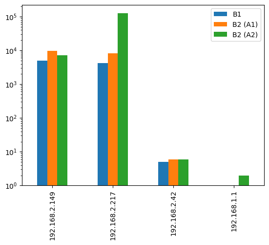
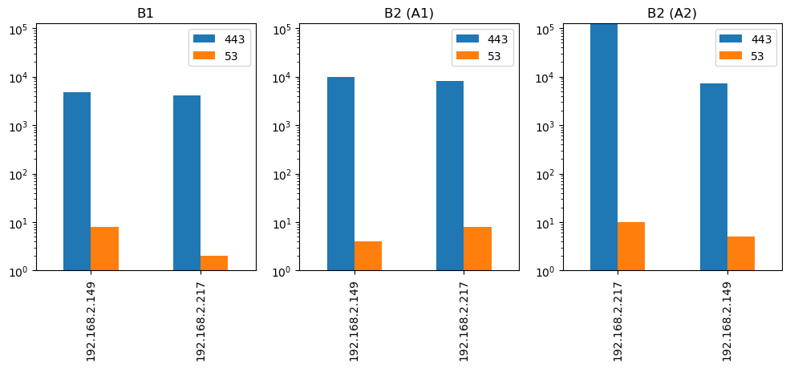
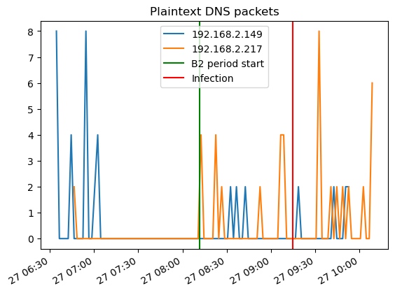
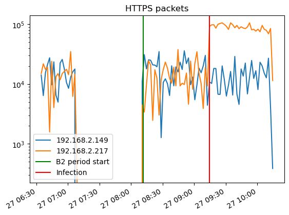

from detect_common import *20 Analyze generated dataset
20.1 Real-world scenario experiment with FluBot infected machine
Traffic stored in v9_1.csv (B1) and v9_2.csv (B2) (Figure 3.1).
Let’s convert it to feather for faster processing, and get a bird view on the data.
df = pd.read_csv(basepath + "datasets/flubot20230323/data/v9_1.csv")
df.to_feather("cached/v9_1.ft")
df = pd.read_csv(basepath + "datasets/flubot20230323/data/v9_2.csv")
df.to_feather("cached/v9_2.ft")import dateutil.parser
df1 = pd.read_feather("cached/v9_1.ft")
df1["time TIME_FIRST"] = df1["time TIME_FIRST"].apply(dateutil.parser.parse)len(df1)12167df2 = pd.read_feather("cached/v9_2.ft")
df2["time TIME_FIRST"] = df2["time TIME_FIRST"].apply(dateutil.parser.parse)len(df2)158678df.info()<class 'modin.pandas.dataframe.DataFrame'>
RangeIndex: 158678 entries, 0 to 158677
Data columns (total 29 columns):
# Column Non-Null Count Dtype
--- ------------------------ --------------- -----
0 ipaddr DST_IP 158678 non-null object
1 ipaddr SRC_IP 158678 non-null object
2 uint64 BYTES 158678 non-null int64
3 uint64 BYTES_REV 158678 non-null int64
4 uint64 LINK_BIT_FIELD 158678 non-null int64
5 time TIME_FIRST 158678 non-null object
6 time TIME_LAST 158678 non-null object
7 macaddr DST_MAC 158678 non-null object
8 macaddr SRC_MAC 158678 non-null object
9 uint32 PACKETS 158678 non-null int64
10 uint32 PACKETS_REV 158678 non-null int64
11 uint16 DST_PORT 158678 non-null int64
12 uint16 SRC_PORT 158678 non-null int64
13 uint16 TLS_VERSION 158678 non-null int64
14 uint8 DIR_BIT_FIELD 158678 non-null int64
15 uint8 PROTOCOL 158678 non-null int64
16 uint8 TCP_FLAGS 158678 non-null int64
17 uint8 TCP_FLAGS_REV 158678 non-null int64
18 int8* PPI_PKT_DIRECTIONS 158678 non-null object
19 uint8* PPI_PKT_FLAGS 158678 non-null object
20 string TLS_ALPN 83494 non-null object
21 bytes TLS_JA3 136785 non-null object
22 string TLS_SNI 136783 non-null object
23 uint16* PPI_PKT_LENGTHS 158678 non-null object
24 uint32* D_PHISTS_IPT 158678 non-null object
25 uint32* D_PHISTS_SIZES 158678 non-null object
26 uint32* S_PHISTS_IPT 158678 non-null object
27 uint32* S_PHISTS_SIZES 158678 non-null object
28 time* PPI_PKT_TIMES 158678 non-null object
dtypes: object(17), int64(12)
memory usage: 35.1 MBmax_ts_b1 = df1["time TIME_FIRST"].max() - pd.Timedelta(minutes=5)# skip last 5 mins of traffic where we have fluctiations because of stopped traffic2.py script
local_df1 = df1[df1["ipaddr SRC_IP"].str.startswith("192.168")]
local_df1 = local_df1[local_df1["time TIME_FIRST"] < max_ts_b1]
local_df2 = df2[df2["ipaddr SRC_IP"].str.startswith("192.168")]
len(local_df1), len(local_df2)(8870, 149890)local_ips2 = local_df2["ipaddr SRC_IP"].unique().tolist()
local_ips2local_ips1 = local_df1["ipaddr SRC_IP"].unique().tolist()
local_ips = list(set(local_ips1 + local_ips2))
local_ips['192.168.2.149', '192.168.2.42', '192.168.2.217', '192.168.1.1']min_ts = local_df1["time TIME_FIRST"].min()
min_ts_b2 = local_df2["time TIME_FIRST"].min()
min_ts, min_ts_b2(Timestamp('2023-03-27 06:34:34.435834'),
Timestamp('2023-03-27 08:11:28.539603'))20.2 B1 period vs B2 period
infection_ts = min_ts + pd.Timedelta(minutes=160)
infection_tsTimestamp('2023-03-27 09:14:34.435834')local_df2_a1 = local_df2[local_df2["time TIME_FIRST"] < infection_ts]
local_df2_a2 = local_df2[local_df2["time TIME_FIRST"] >= infection_ts]from matplotlib import pyplot as plt
d = {
'B1': local_df1["ipaddr SRC_IP"].value_counts().to_dict(),
'B2 (A1)': local_df2_a1["ipaddr SRC_IP"].value_counts().to_dict(),
'B2 (A2)': local_df2_a2["ipaddr SRC_IP"].value_counts().to_dict(),
}
pd.DataFrame(d).plot(kind='bar', log=True)
plt.show()
20.3 Plaintext DNS vs whole HTTPS traffic
from matplotlib import pyplot as plt
fig, axs = plt.subplots(ncols=3, figsize=(12, 4))
max_val = 0
for ax, df, title in zip(axs, [local_df1, local_df2_a1, local_df2_a2], ["B1", "B2 (A1)", "B2 (A2)"]):
d = {
'443': df[df["uint16 DST_PORT"] == 443]["ipaddr SRC_IP"].value_counts().to_dict(),
'53': df[df["uint16 DST_PORT"] == 53]["ipaddr SRC_IP"].value_counts().to_dict(),
}
max_val = max(max_val, *[v2 for v in d.values() for v2 in v.values()])
pd.DataFrame(d).plot(kind='bar', log=True, ax=ax, title=title)
for ax in axs:
ax.set_ylim(ymin=0, ymax=max_val)
plt.show()
20.4 Timeline of the traffic
f = '2min'
def plot_packets_by_port(local_df, host, dst_port):
a1_t = local_df[local_df["ipaddr SRC_IP"] == host].set_index(["time TIME_FIRST"])
a1_t53 = a1_t[a1_t["uint16 DST_PORT"] == dst_port][["uint32 PACKETS", "uint32 PACKETS_REV"]]
a1_t53["PACKETS"] = a1_t53["uint32 PACKETS"] + a1_t53["uint32 PACKETS_REV"]
df_resample = a1_t53.groupby(pd.Grouper(freq=f, origin=min_ts)).sum()
return df_resamplelocal_df = pd.concat([local_df1, local_df2]).reset_index(drop=True)df_plots = {h: plot_packets_by_port(local_df, h, 53) for h in local_ips}pd.DataFrame({
h: df["PACKETS"].to_dict()
for h, df in df_plots.items()
if len(df) > 0
}).plot()
plt.axvline(x=min_ts_b2, label="B2 period start", color="green")
plt.axvline(x=infection_ts, label="Infection", color="red")
plt.title("Plaintext DNS packets")
plt.legend()
plt.plot()[]
df_plots = {h: plot_packets_by_port(local_df, h, 443) for h in local_ips}pd.DataFrame({
h: df["PACKETS"].to_dict()
for h, df in df_plots.items()
if len(df) > 0
}).plot(logy=True)
plt.axvline(x=min_ts_b2, label="B2 period start", color="green")
plt.axvline(x=infection_ts, label="Infection", color="red")
plt.title("HTTPS packets")
plt.legend()
plt.plot()[]